ACTIVIDAD 08 - ROAD TO HALL OF FAME - SQL Injection
Carlos René Castillo Olvera – 182033Materia: Seguridad Informática (CNO V)
Fecha: 06/03/2026
Docente: Adolfo M.

Lab 1: SQL injection vulnerability in WHERE clause allowing retrieval of hidden data
La página usa un filtro de categoría para mostrar productos. Cuando eliges una categoría, el servidor hace una consulta SQL que busca productos de esa categoría y solo muestra los que están publicados (released = 1).
Al cambiar el parámetro por '+OR+1=1-- se agrega una condición que siempre es verdadera. Esto hace que la consulta ignore el filtro de released = 1, y el -- comenta el resto de la consulta.
La aplicación hacía una consulta SQL como esta:
SELECT * FROM products WHERE category = 'Tech gifts' AND released = 1
Esto significa que solo muestra productos de la categoría elegida y que estén publicados (released = 1).
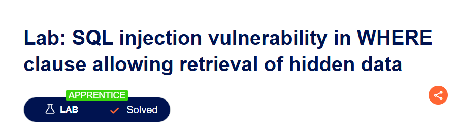
CompletadoLab 2: SQL injection vulnerability allowing login bypass
La página web tiene un formulario de login donde el usuario escribe el username y password. Estos datos se usan para hacer una consulta SQL en la base de datos para verificar si las credenciales son correctas. Por ejemplo:
SELECT * FROM users WHERE username = 'administrator' AND password = '1234'
El problema es que el campo de username no valida lo que se escribe. Entonces se puede modificar el valor y meter código SQL para cambiar la consulta. Al hacer esto, se puede evitar la verificación de la contraseña y entrar como administrador.
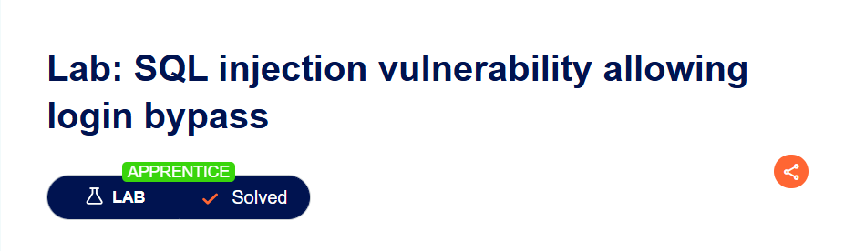
CompletadoLab 3: SQL injection attack, querying the database type and version on Oracle
La página tiene un filtro de categoría que usa una consulta SQL para mostrar productos. El problema es que el parámetro category no valida lo que se envía, entonces se puede meter código SQL.
Con UNION SELECT se puede agregar otra consulta a la original para que la base de datos devuelva información extra.
En este caso primero se prueba cuántas columnas tiene la consulta. Después se usa UNION para consultar la tabla v$version, que en Oracle guarda información sobre la versión de la base de datos. Así la página termina mostrando la versión de la base de datos.
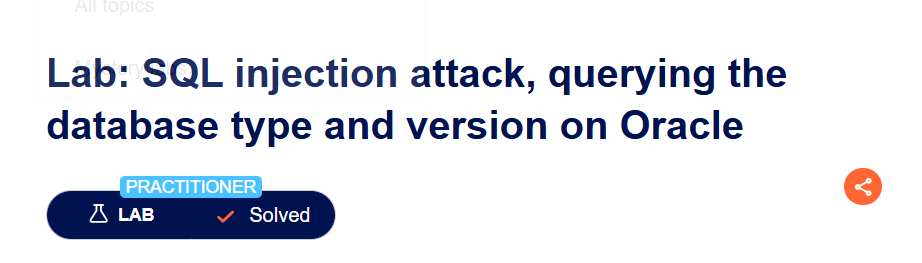
CompletadoLab 4: SQL injection attack, querying the database type and version on MySQL and Microsoft
La página usa un filtro de categoría para mostrar productos. El problema es que el parámetro category no valida lo que se envía, así que se puede meter código SQL.
Con UNION SELECT se puede agregar otra consulta a la original para que la base de datos devuelva más información. En este caso se usa @@version, que muestra la versión de la base de datos en MySQL o Microsoft SQL Server.
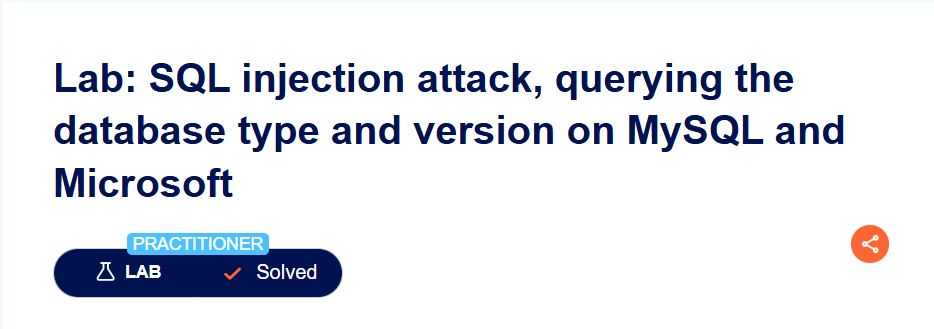
CompletadoLab 5: SQL injection attack, listing the database contents on non-Oracle databases
El esquema information_schema es un estándar SQL disponible en PostgreSQL, MySQL y MSSQL.
Contiene metadatos de todas las tablas y columnas de la base de datos. Al consultar
information_schema.tables se obtiene la lista de tablas; luego information_schema.columns revela las
columnas de la tabla objetivo.
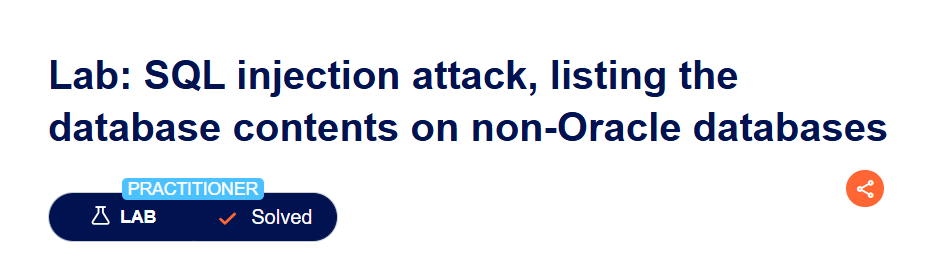
CompletadoLab 6: SQL injection attack, listing the database contents on Oracle
Oracle no implementa el estándar information_schema. En su lugar usa sus propias vistas del diccionario de datos: all_tables (tablas accesibles por el usuario actual), all_tab_columns (columnas de esas tablas), user_tables (solo tablas propias) y dba_tables (todas las tablas, requiere privilegios DBA). Todas las consultas SELECT en Oracle requieren FROM.
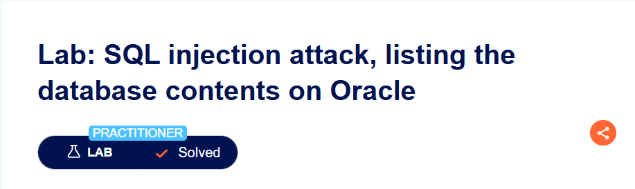
CompletadoLab 7: SQL injection UNION attack, determining the number of columns returned by the query
Una cláusula UNION requiere que ambas consultas (la original y la inyectada) devuelvan el mismo número de columnas. Si el número no coincide, el motor lanza un error HTTP 500. La técnica consiste en agregar NULL progresivamente hasta que la respuesta sea 200 OK. NULL es compatible con cualquier tipo de dato, lo que lo hace ideal para descubrir el conteo.
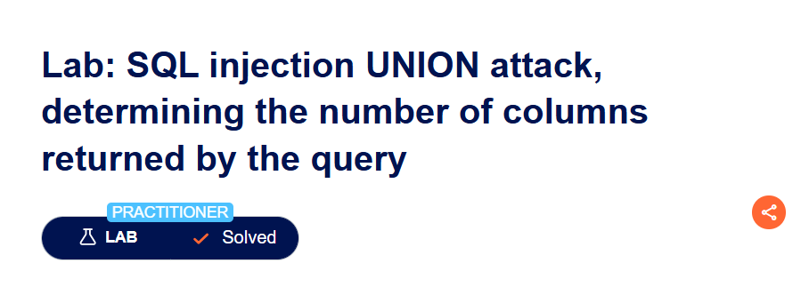
CompletadoLab 8: SQL injection UNION attack, finding a column containing text
Una vez conocido el número de columnas, se debe encontrar cuál de ellas acepta tipo texto. Si se inyecta una cadena en una columna que espera un entero, el motor arroja error de conversión de tipos. Se sustituye un NULL por una cadena de prueba ('a') de forma iterativa hasta encontrar la columna compatible
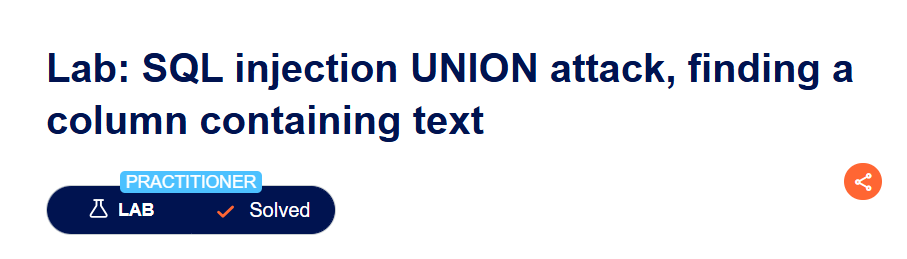
CompletadoLab 9: SQL Injection UNION Attack — Retrieving Data from Other Tables
Este lab integra los conocimientos de los labs 7 y 8. Sabiendo que la consulta devuelve 2 columnas de tipo texto, se puede seleccionar directamente las columnas username y password desde la tabla users en la misma posición. La respuesta de la aplicación mostrará las credenciales mezcladas con los productos.
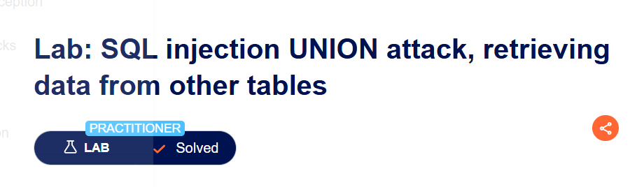
CompletadoLab 10: SQL Injection UNION Attack — Retrieving Multiple Values in a Single Column
Cuando solo una columna acepta texto, no es posible extraer dos campos por separado. La solución es concatenar los valores en una sola cadena usando el operador de concatenación del motor: || en PostgreSQL/Oracle, + en MSSQL, CONCAT() en MySQL. Se añade un delimitador personalizado (~) para separar los valores en el output.
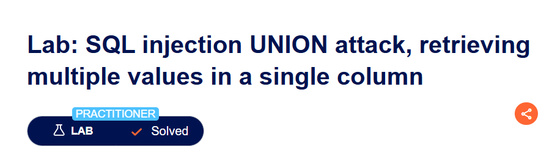
CompletadoLab 11: Blind SQL Injection with Conditional Responses
La vulnerabilidad está en la cookie TrackingId, no en un campo de formulario visible. La aplicación no devuelve datos de la consulta, pero muestra 'Welcome back' si la condición es verdadera. Se usa la función SUBSTRING(string, inicio, longitud) para extraer un carácter de la contraseña y compararlo con un valor candidato. Si coincide → Welcome back (TRUE). Si no → sin mensaje (FALSE).
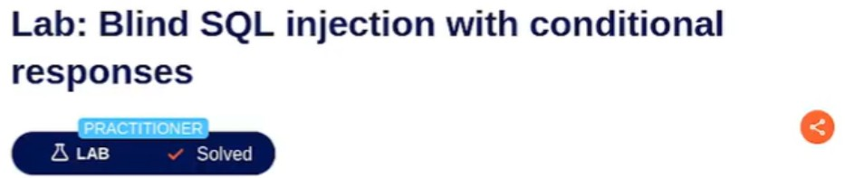
CompletadoLab 12: Blind SQL Injection with Conditional Errors
No hay ningún indicador visual en la respuesta HTML (ni 'Welcome back' ni mensajes de error visibles). El canal de extracción es el código HTTP: 500 = condición verdadera (error forzado) / 200 = condición falsa (sin error). Se usa CASE WHEN para evaluar cada carácter: si es correcto, ejecuta 1/0 que lanza ORA01476 (divisor is equal to zero), generando HTTP 500. Si es incorrecto, devuelve '' sin error, generando HTTP 200.
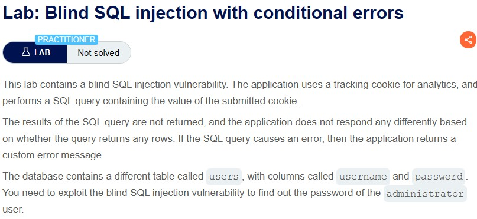
CompletadoLab 13: Visible Error-Based SQL Injection
PostgreSQL lanza un error detallado cuando intenta convertir un tipo de dato a otro incompatible. Al forzar CAST(texto AS integer), si el texto no puede convertirse a número, PostgreSQL incluye el valor del texto en el mensaje de error: ERROR: invalid input syntax for type integer: 'contraseña_aquí'. La aplicación muestra este error en la respuesta HTTP, revelando el valor directamente.
CompletadoLab 14: Blind SQL injection with time delays
La aplicación ejecuta una query SQL usando el valor de la cookie TrackingId para analytics, sin retornar resultados visibles ni exponer errores al usuario:
SELECT * FROM tracking WHERE id = 'iJXJefJJ03gfh3Sw'
Al no implementar consultas parametrizadas, el valor de la cookie es inyectable. Dado que la query se ejecuta de forma síncrona, el servidor espera a que termine antes de responder, lo que permite inferir ejecución exitosa midiendo el tiempo de respuesta. Al interceptar la request con Burp Suite y modificar la cookie TrackingId con el payload '||pg_sleep(10)--, la consulta que realmente ejecuta el servidor se transforma en:
SELECT * FROM tracking WHERE id = 'iJXJefJJ03gfh3Sw'||pg_sleep(10)--'
Todo lo que aparece después de `--` es tratado como comentario y es ignorado. El operador `||` concatena el resultado de `pg_sleep(10)` al valor del TrackingId, forzando al motor PostgreSQL a pausar 10 segundos antes de continuar, lo que retrasa toda la respuesta HTTP y confirma la ejecución del payload.
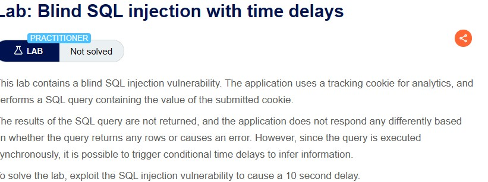
CompletadoLab 15: Blind SQL injection with time delays and information retrieval
La aplicación ejecuta una query SQL usando el valor de la cookie TrackingId para analytics, sin retornar resultados visibles ni exponer errores al usuario:
SELECT * FROM tracking WHERE id = 'pqjSsvhm9TysQ2xB'
Al no implementar consultas parametrizadas, el valor de la cookie es inyectable. La query se ejecuta de forma síncrona, por lo que el servidor espera a que termine antes de responder. Esto permite inferir información confidencial de otras tablas mediante retardos condicionales: si una condición es verdadera se ejecuta pg_sleep(5), si es falsa la respuesta es inmediata. Al inyectar el payload con un CASE WHEN condicional, la query que realmente ejecuta el servidor se transforma en:
SELECT * FROM tracking WHERE id = 'pqjSsvhm9TysQ2xB';SELECT CASE WHEN (username='administrator' AND SUBSTRING(password,1,1)='a') THEN pg_sleep(5) ELSE pg_sleep(0) END FROM users--'
El ; permite encadenar una segunda query independiente. El CASE WHEN evalúa una condición sobre la tabla users y según el resultado pausa o no la respuesta, filtrando información carácter por carácter sin que la aplicación retorne dato alguno de forma explícita.
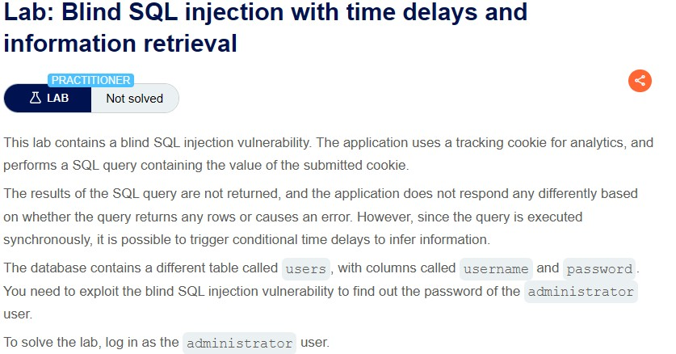
CompletadoLab 16: Blind SQL injection with out-of-band interaction
Cuando no hay diferencia en respuesta HTTP ni en tiempo, el único canal disponible es la red saliente (OOB). Oracle permite realizar peticiones HTTP/DNS mediante el paquete UTL_HTTP y la función EXTRACTVALUE con entidades XML externas (XXE incrustado en SQL). Al procesar el XML malicioso, Oracle intenta resolver el hostname remoto, generando una consulta DNS visible en Burp Collaborator.
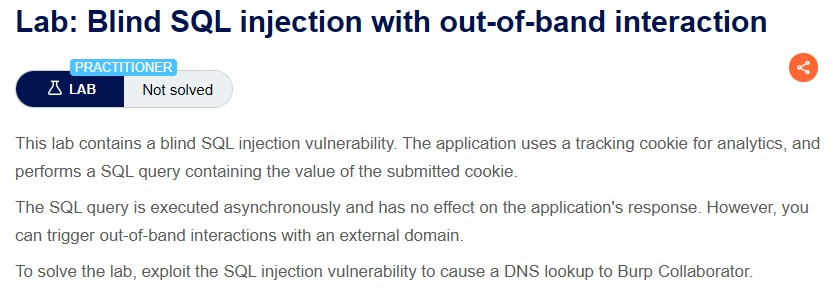
CompletadoLab 17: Blind SQL injection with out-of-band data exfiltration
Similar al Lab 16, pero ahora la subconsulta que extrae la contraseña se concatena directamente al subdominio de la URL del Collaborator. Al resolverse el DNS, el registro que llega al Collaborator contiene la contraseña como subdomain: contraseñaaquí.tu-collaborator.net. Oracle evalúa la subconsulta antes de construir la URL, por lo que la resolución DNS lleva el dato embebido.
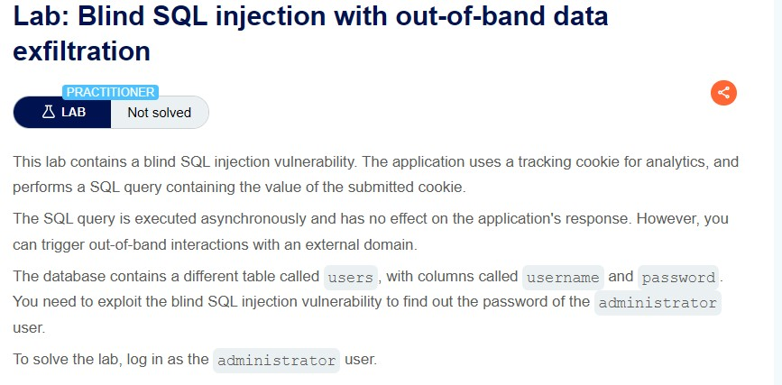
CompletadoLab 18: SQL injection with filter bypass via XML encoding
La función de stock check envía una solicitud POST con los parámetros productId y storeId en formato XML:
[?xml version="1.0" encoding="UTF-8"?][stockCheck][productId]5[storeId]1
El parámetro storeId es inyectable ya que su valor se concatena directamente en una query SQL sin sanitización. La aplicación implementa un WAF que inspecciona el contenido de las requests en busca de patrones típicos de SQLi en texto plano. Al intentar inyectar directamente, el WAF reconoce palabras clave como UNION o SELECT y bloquea la request con un HTTP 403:
[storeId]1 UNION SELECT NULL → HTTP 403 "Attack detected"
Aquí entra Hackvertor. Esta extensión de Burp Suite permite codificar el payload en entidades hexadecimales XML, transformando cada carácter en su representación hex antes de que la request salga hacia el servidor. Desde la perspectiva del WAF, el contenido no contiene ningún patrón reconocible de SQLi porque solo ve secuencias hexadecimales. Sin embargo, el servidor web decodifica las entidades XML de forma nativa antes de pasarlas al motor de base de datos, ejecutando la query inyectada con total normalidad. Esto crea una brecha entre lo que el WAF inspecciona y lo que la base de datos finalmente ejecuta.
Al codificar el payload final con hex_entities, la query que realmente ejecuta el servidor es:
SELECT stock FROM products WHERE storeId = 1 UNION SELECT username || '~' || password FROM users
Al retornar una sola columna, se concatenan username y password con el separador ~ para extraerlos en un único campo, obteniendo las credenciales de todos los usuarios incluyendo administrator.
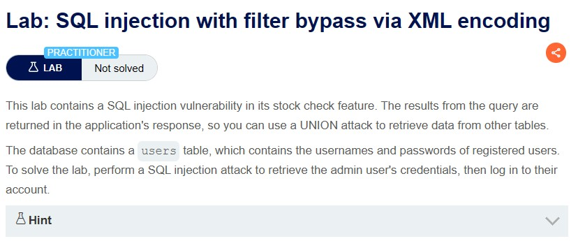
CompletadoConclusion
En estos laboratorios se pudo ver cómo funciona la vulnerabilidad de SQL Injection y lo peligrosa que puede ser cuando una aplicación web no valida correctamente los datos que escribe el usuario. En varios ejercicios fue posible modificar las consultas SQL para ver información que normalmente no debería mostrarse, como productos ocultos o incluso iniciar sesión como administrador sin conocer la contraseña.
También se usaron técnicas más avanzadas como UNION para obtener información de la base de datos, ataques ciegos usando retrasos de tiempo para descubrir datos poco a poco, y métodos para evadir filtros de seguridad. Esto demuestra que un atacante puede encontrar diferentes formas de explotar una misma vulnerabilidad dependiendo de cómo esté hecha la aplicación.
En general, estos laboratorios ayudan a entender por qué es importante validar los datos del usuario, usar consultas preparadas y aplicar buenas prácticas de seguridad en el desarrollo de aplicaciones web para evitar este tipo de ataques.
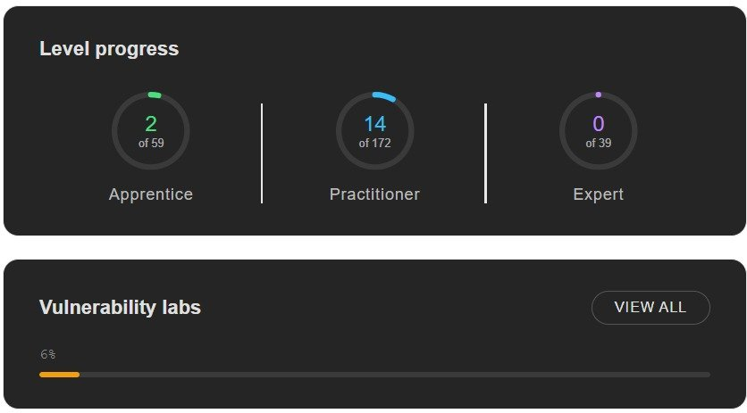
NOTA: De los 18 laboratorios del módulo, 16 fueron completados de forma exitosa. Los laboratorios #16 (Blind SQLi with out-of-band interaction) y #17 (Blind SQLi with out-of-band data exfiltration) requieren acceso a Burp Suite Professional y un servidor Burp Collaborator activo, funcionalidades exclusivas de la versión de pago, por lo que no fue posible completarlos con la versión gratuita disponible.